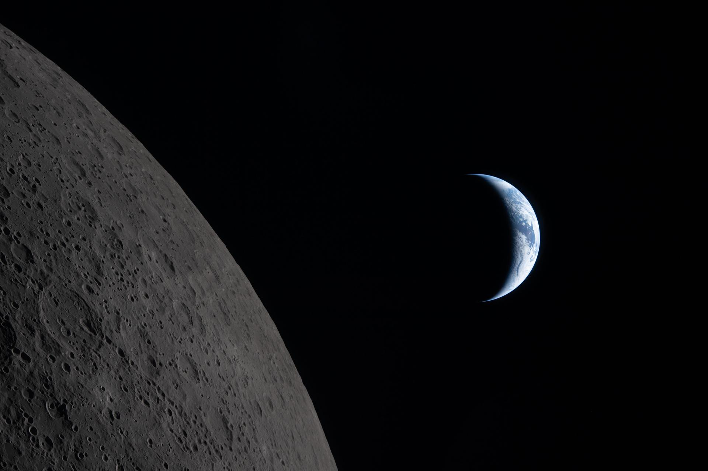

🌌 अंतरिक्ष समाचार | Space News

दिनांक: २९-०९-२०२६ • Date: 29-09-2026 • Time: 12:57 IST • 13 Updates
Reviewer Access

SENSATIONAL! Who In Delhi Stopped The GSLV Launch? Rediff

After court reprimand over paper leaks, Nilekani-led panel consults ex-ISRO chairman on NTA overhaul The Indian Express

NEET Paper Leak: Nandan Nilekani-led panel consults ex-ISRO chief K Radhakrishnan on NTA exam reforms news.careers360.com

ISRO plans NavIC revival with NVS-03 launch in October DT Next

NTA exam reforms: Nilekani-led panel consults ex-ISRO chief Radhakrishnan, who led committee set up after... Moneycontrol.com

On Monday, NASA and Boeing provided an update on the company’s Starliner spacecraft, including adding additional crew missions and certifying a new rocket for crew transportation to low Earth orbit. “We are living through the most exciting era of space exploration since Apollo,” said NASA Administrator Jared Isaacman. “As this domain continues to open, there […]

A commercial mission to boost NASA’s Swift observatory concluded without raising the spacecraft’s orbit, but the agency and industry vendor gained valuable experience that will benefit future in-space servicing programs.

Marking a significant expansion in the number of signatories to the Artemis Accords, NASA welcomed Albania, Croatia, Côte d’Ivoire, and San Marino, bringing total participation to 76 countries. “Our momentum reflects a growing commitment to peaceful, responsible exploration and a shared understanding that the future in space will be shaped by those willing to lead,” [R...
Editor’s Note: This advisory was updated on Sept. 28, 2026, with ticketing information for the public. The four astronauts of NASA’s Artemis II mission will participate in an event hosted by industry and community partners at the University of Houston to discuss their mission around the Moon aboard the Orion spacecraft. It will be the […]

Four crew members are set to launch to the International Space Station as part of NASA’s SpaceX Crew-13 mission to perform research, technology demonstrations, and maintenance aboard the orbiting laboratory.
If the unpiloted test flight goes well, NASA and Boeing hope to launch a piloted Starliner flight in mid 2028, officials said Monday, incorporating redesigned propulsion system valves, more robust subsystems and other modifications expected to prevent the sort of failures that occurred in 2024.

Spacecraft propulsion traditionally relies on volatile fuels and separate, bulky systems for different types of maneuvering in space. NASA is working to change that. Engineers at NASA's Marshall Space Flight Center in Huntsville, Alabama, recently completed a series of environmental and physical tests on a new small satellite designed to make spaceflight safer and more efficien...

Astronomers using data from the Euclid space telescope have discovered an exceptionally faint stellar system near the Fornax dwarf galaxy. Called Fornax-7, it appears to contain only about 170 times the mass of the sun in stars. The discovery paper was posted to the arXiv preprint server on Sept. 13.